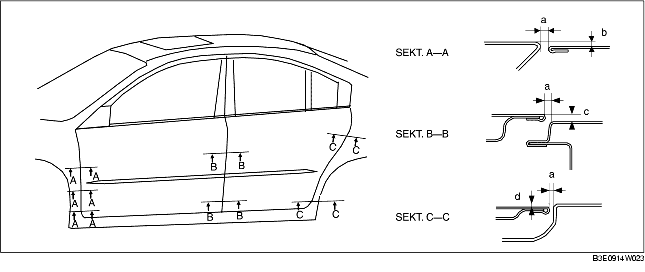

DÖRRJUSTERING
B3E091158010W04
1. Mät gapet och höjden mellan framdörr eller bakdörr och kaross.
2. Lossa gångjärnens monteringsbultar eller låsbleckets monteringsskruvar och justera dörrens läge.
-
Standardgap
-
a: 2,7-4,7 mm {0,11-0,18 tum}
-
b (övre): -1,0-1,0 mm {-0,040-0,039 tum}
-
b (mitten): -0,5-1,5 mm {-0,020-0,059 tum}
-
b (nedre): -0,3-1,3 mm {-0,027-0,051 tum}
-
c (övre): -1,0-1,0 mm {-0,040-0,039 tum}
-
c (nedre): -0,5-1,5 mm {-0,020-0,059 tum}
-
d (övre): -1,0-1,0 mm {-0,040-0,039 tum}
-
d (nedre): -0,5-1,5 mm {-0,020-0,059 tum}

3. Dra åt bultar eller skruvar.